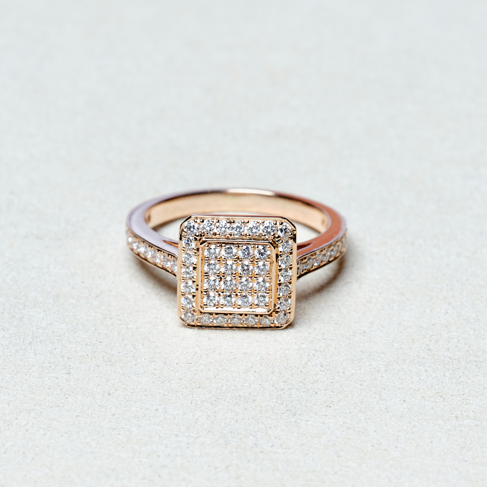
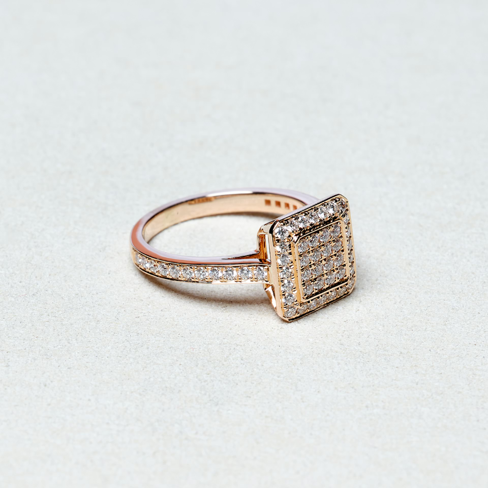

Collection Stockholm
La Correspondance
« Ce soir, j'ai pris la plume
pour te dire ce que mes lèvres
n'osent murmurer… »
Découvrir
« Ce soir, j'ai pris la plume
pour te dire ce que mes lèvres
n'osent murmurer… »

Il y a des soirs où les mots s'échappent d'eux-mêmes. La plume hésite à peine, elle glisse, elle sait. La lumière des bougies vient caresser mes doigts et quelque chose brille — quelque chose qui n'a pas besoin de mots.
C'est un éclat discret, presque secret, au creux de ma main qui écrit.
« L'encre sèche, mais l'or demeure. »
Je l'ai vue pour la première fois derrière une vitrine de la rue Pastorelli. Elle tournait sous la lumière comme une étoile prise dans l'ambre.
On ne regarde pas une bague Stockholm.
On la découvre, facette après facette,
comme on relit une lettre — en y trouvant chaque fois un sens nouveau.

La chaleur de l'or rouge — un métal vivant, qui prend la lumière de celui qui le porte.

Vingt-quatre éclats disposés à la main, chacun choisi pour sa pureté, son feu intérieur.

L'écrin repose sur le marbre, entr'ouvert. Le feu crépite. Un verre de cognac à peine touché.
Il y a des objets qu'on ne montre pas — qu'on garde pour soi, dans le silence d'un soir où l'on se sait enfin libre de désirer.
« Certains trésors ne brillent
que dans l'intimité de la flamme. »
Elle se tient là, dans la lumière. Les portes ouvertes derrière elle ne sont plus une sortie — c'est une entrée. L'entrée dans une histoire qu'elle a décidé d'écrire elle-même.
« Je ne porte pas cette bague.
C'est elle qui m'a choisie. »